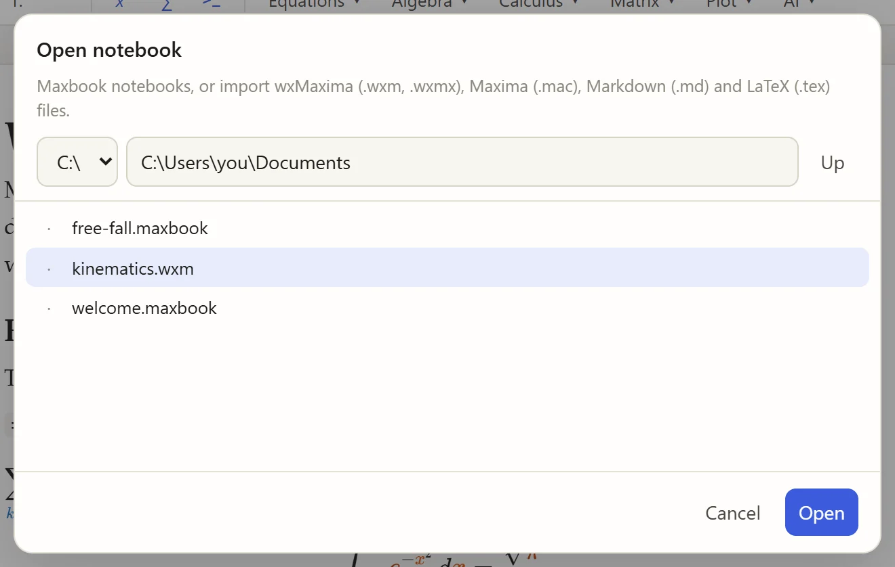
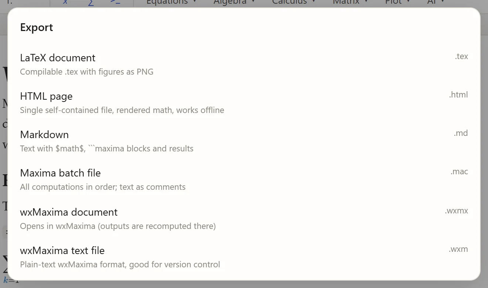

Opening, saving and exporting
Opening and importing
Open (Ctrl+O) shows the folders on your computer:

Double-click a file, or select it and click Open. Type a folder into the path field and press Enter to jump there; on Windows, the drop-down switches drives.
Maxbook opens:
|
Maxbook notebooks (also those written by Maxbook 0.1, which are converted) |
|
wxMaxima documents: text cells become text, input cells become Maxima blocks, titles and sections become headings |
|
Maxima batch files: comments become text, code becomes Maxima blocks |
|
Markdown, with |
|
LaTeX: sections, paragraphs, lists, inline and display math |
An imported file is not changed: Save suggests a new .maxbook file next to it.
You can also start Maxbook with a file: maxbook notes.wxmx.
The Recent list on the left reopens the last notebooks.
Pasting
Paste Markdown or LaTeX into the document and it becomes formatted text, formulas and Maxima blocks. Plain text stays plain text.
Saving
Save (Ctrl+S) writes the notebook; Save as… (Ctrl+Shift+S) asks for a new name. Maxbook asks before replacing an existing file. A dot next to the title means there are unsaved changes, and closing the window asks first.
A .maxbook file is plain JSON with the results included, so it opens exactly as you left it and works well in version control.
Its structure is described in The .maxbook format.
Exporting
Export offers six formats:

LaTeX document ( |
A complete LaTeX document with your text, formulas, Maxima input and results; plots are written as PNG files into a folder next to it.
It compiles with |
HTML page ( |
One self-contained file with the fonts and plots inside, which looks like the notebook and works offline: easy to e-mail or put on a website. |
Markdown ( |
Text with |
Maxima batch file ( |
All computations in document order, with the text as comments: run it with |
wxMaxima document ( |
Opens in wxMaxima; wxMaxima recomputes the outputs. |
wxMaxima text file ( |
wxMaxima’s plain-text format. |
To get a PDF, export LaTeX and compile it (pdflatex file.tex), or use Print / save as PDF from Ctrl+K: printing hides the toolbars and side panels.